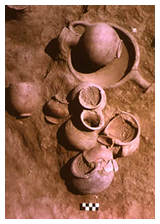

Department
of Ancient Near East > research
> excavations > Jerablus
Tahtani, Syria
|  Pottery on site at Jerablus |
Excavations were begun in 1991 at a relatively small tell, Jerablus Tahtani, situated close to the ancient capital of Carchemish on the banks of the Euphrates in northern Syria. Conducted by Edgar Peltenburg of the University of Edinburgh, and supported by the British Museum, these excavations represent the British contribution to the Syrian government's International Tishreen Dam Rescue Project, an international initiative aimed at retrieving information from sites likely to be flooded by the creation of a 60 km long reservoir. The results of the excavations have provided substantial new evidence for the 4th-3rd millennium BC cultural sequence in the Middle Euphrates river valley. The earliest remains belong to a local Late Chalcolithic occupation. Above this were found buildings and artefacts characteristic of the Uruk culture, demonstrating the precocious expansion of this Mesopotamian culture into northern Syria in the late 4th millennium BC. Part of a domestic complex has been excavated which included evidence for bitumen processing and textile preparation. A fine assemblage of pottery was recovered as well as sealings for the administration of goods, decorated alabaster vessels, metal pins and beads. The Uruk settlement declined as a result of flooding of the Euphrates. The following Early Bronze Age occupation consisted initially of a small open village. However, in the subsequent phase of this period, the site was strongly defended. A fort was constructed consisting of a warren of mud-brick walls with paved passages and drains. A postern gate with flanking towers was discovered, together with a terrace leading to a passage giving access to the Euphrates. Several intra-mural tombs were found belonging to this phase, but the most spectacular find was of a huge extra-mural tomb containing 13 bodies accompanied by objects of gold, silver, rock crystal, ivory and bronze and more than 1000 pottery vessels. Once again, this Early Bronze Age settlement was brought to an end by massive flooding and occupation was not resumed until late in the Iron Age.
|